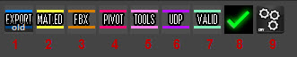
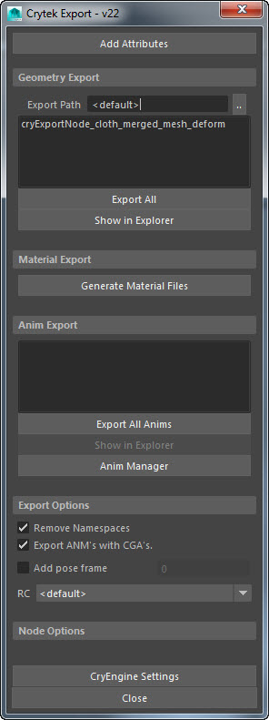
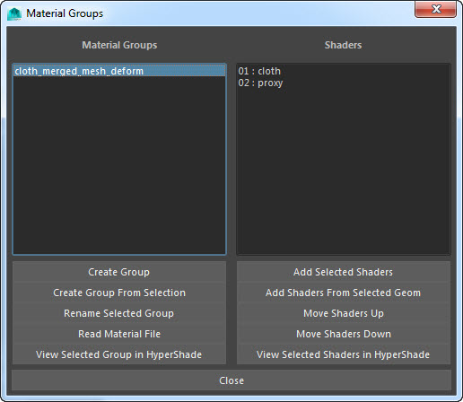
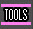
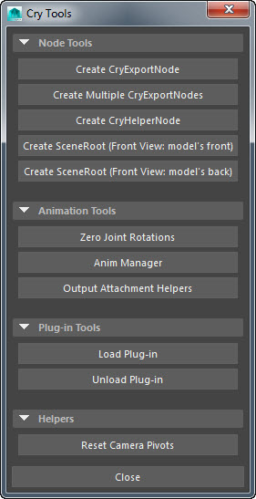
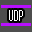
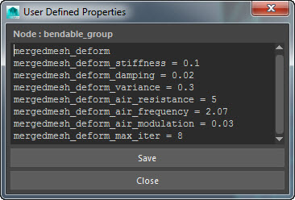
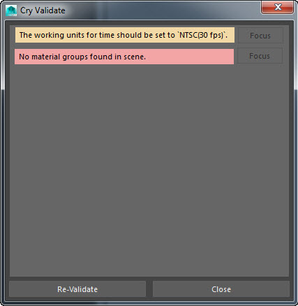
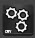
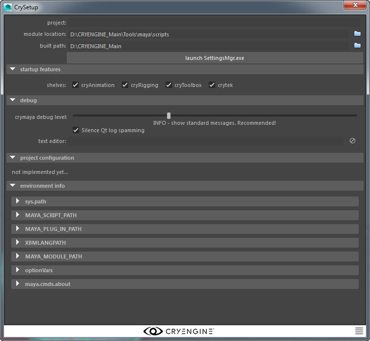

Overview
This article will cover the User Interface for Maya use with CRYENGINE.
Tools and Icons
After the CRYENGINE addon is installed, you can find a shelf icon labelled Crytek. Under the Crytek tab, you can access the following tools:

| Tools | Description |
|---|---|
Lets you open the Crytek Export window. It allows you to export the objects from the Maya scene to the CRYENGINE sandbox editor.  | |
Lets you access the Material Groups window used for organizing all your materials which will be used in Sandbox.  | |
Cleans up nodes created while importing an FBX scene from Max. It renames all the root nodes to cryexportnode. | |
Helps to fix the node's pivot position to quickly get an object's translation data from world space 0,0,0. This enables the origin of the selected node to be moved to its pivot position. You can also enable the Center Pivot checkbox to center the pivot position. | |
 | Provides access to the following Crytek tools:
 |
 | Lets you specify user-defined properties for an object. You can create, modify or delete the properties in the User Defined Properties window. To view the user-defined properties specified in an object, select the entire object and click the UDP icon in the Crytek tab.  |
Performs validation checks before exporting an object or scene. It will abort the export operation when it encounters any errors or warning in the validation checks. There are two types of messages produced by the validation, critical and ignorable. If there are any critical messages you can't export until they are fixed. Ignorable messages can be ignored but will displayed the every time the validation is run until fixed.  You can also use the Focus button for selecting the node or component where the validation has failed. | |
| Checks for degenerate faces in the scene. | |
 | Lets you configure the interface options for all the CryMayaTools in the shelf. It also lets you specify the following options:
 |